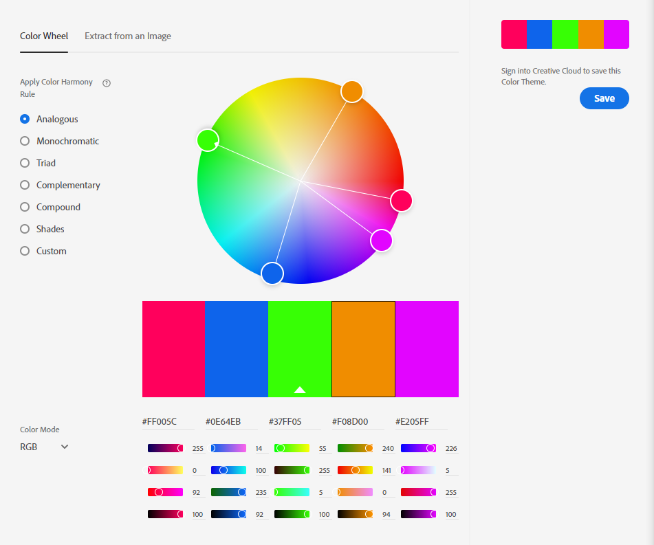
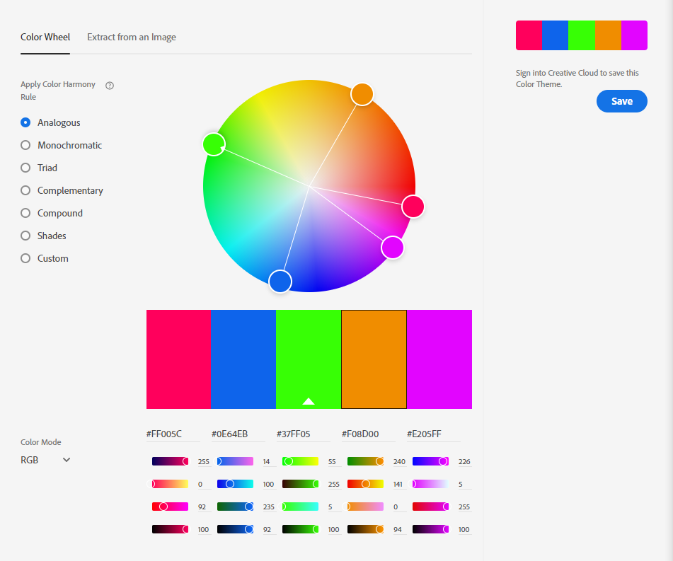

Color Scheme:
I chose basic and bold colors for our cholor scheme as it stands out and catches your attention betten then pastels. These colors consist mostly of Green, Blue, and Orange.

I chose basic and bold colors for our cholor scheme as it stands out and catches your attention betten then pastels. These colors consist mostly of Green, Blue, and Orange.